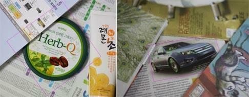
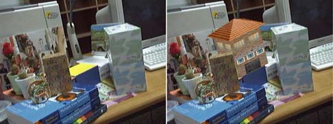
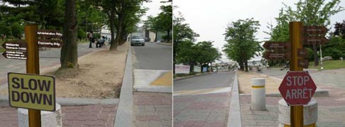
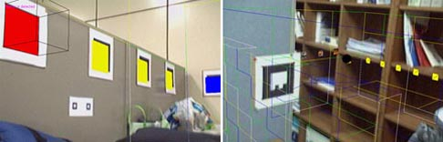
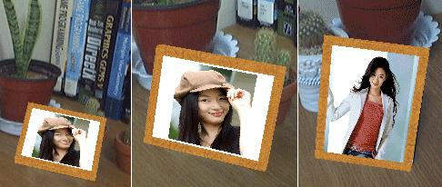

research topics
Natural Feature Tracking for Planar Objects
We developed a fast tracking algorithm for natural feature extracted from textured planar objects. An important aim of this project is to enhance the accuracy and the stability of fast feature matching during the long-term tracking. False matches or outliers are the main cause of instability. Our outlier rejection algorithm discriminates and excludes erroneous match pairs.

Video blending with virtual objects
A video blending task is related to the overlay of virtual objects, replacing real objects with virtual objects, or removing real objects. General blending approaches consider the scene depth structure in composition to become accepted the real and virtual objects which is still a difficult problem in the image analysis field. Our approach is based on a simplification of camera parameters and the use of projective geometry without camera calibration. For each frame, the camera pose is computed only from feature correspondences.

Inserting virtual objects into real video stream
Virtual 3D graphical objects can be inserted into a real video stream based on feature tracking and camera pose estimation. Transformation from the 3D objects to the projection of the objects onto the video frames are revealed from a set of single-camera video frames.

3D registration between real and virtual world
This work presents a real-time camera tracking method using multiple markers while the camera is allowed to move freely in a 3D space. If the geometry of a marker is known and the camera parameters are available, the camera pose can be recovered using a model-based camera pose estimation method.

Virtual photo frame
A photo is shown at the virtual frame and the photo changes serially in a time interval. As well as a series of photos, an actual movie can also be played under the moving-camera environment.

Entertainment Computing Laboratory